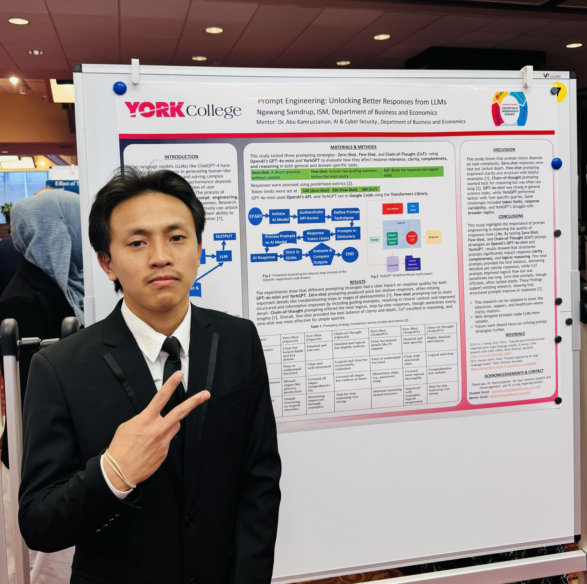

Ngawang Tendrel Samdrup
ngawang.samdrup@yorkmail.cuny.edu || Linkedin || GitHub
Professional Summary

I am a motivated and detail-oriented professional who earned a Bachelor of Science in Information Systems Management and gained hands-on experience in software development,
research, data analysis, and administrative support.
I solve problems, coordinate projects, and make data-driven decisions, consistently learning quickly and adapting to new technologies.
I manage technical systems, databases, and Microsoft Office tools while communicating effectively in writing and speech.
Colleagues recognize my ability to streamline processes, foster teamwork, and ensure accuracy as I contribute to academic research and workplace initiatives.
I dedicate myself to supporting organizational goals by delivering high-quality, reliable results in fast-paced environments.
Education
- Bachelor of Science in Information Systems Management - York college (2023 - 2025)
- Associates degree in Business Administration - Laguardia community college (2020 - 2023)
Experience
Software Engineer Intern - Uptown & Boogie Healthy Project (07/14/2025 - 08/30/2025)
- Built & shipped an AI recipe chatbot (Python, OpenAI API, semantic classification, ChromaDB) on Google Cloud Run, improving members’ ability to find relevant recipes
- Launched a responsive React/Next.js UI on Vercel and embedded the bot across the site, enhancing interactivity and accessibility for users.
- Hardened deployment by configuring environment-specific secrets/variables, supporting secure local development and cloud workflows.
Researcher–Large Language Models - CUNY Immersive Research Experience (CIRE) (08/22/2024 - 07/22/2025)
- Conducting research on Large Language Models (LLMs), focusing on fine-tuning, prompt engineering, and retrieval-augmented techniques.
- Designed and implemented experiments to benchmark LLM performance and identify vulnerabilities, improving model accuracy and reliability.
- Collaborating with interdisciplinary teams to develop innovative solutions in natural language processing.
Technical Skills
- Languages: Python, HTML and C++
- Developer Tools: Google Cloud Run, Git, and Docker
- Tools: Microsoft Word, Excel, Access, Visual Studio Code, Figma, and PyCharm
Awards and Certifications
-
Leadership Decision & Making — Selected for the Gumbo Coalition University program; applied strategic problem solving
and team collaboration.
-
Valedictorian, York College — Class of 2025. Announcement
-
Academic Excellence — in Information Systems Management, York College (2025).
Other Info
Contact me || Resume